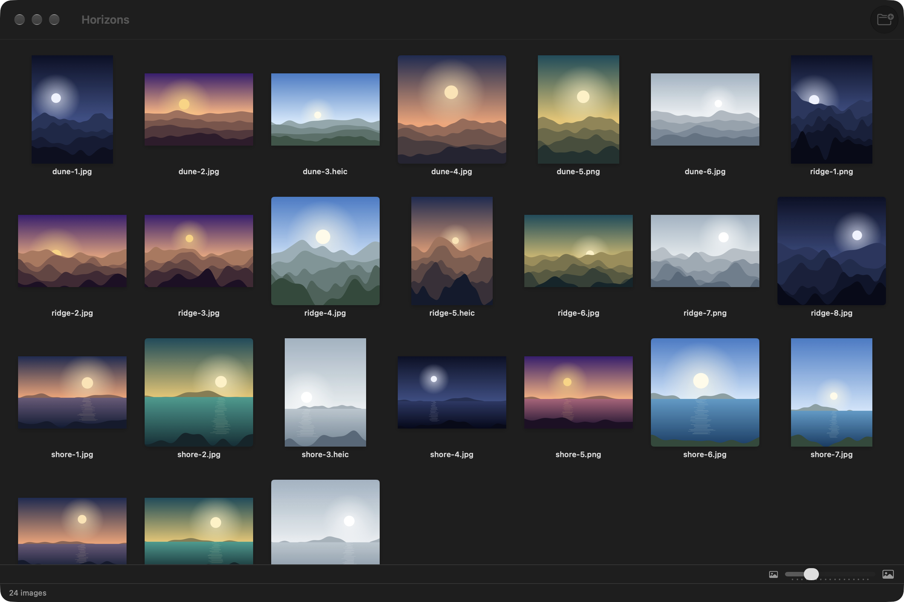
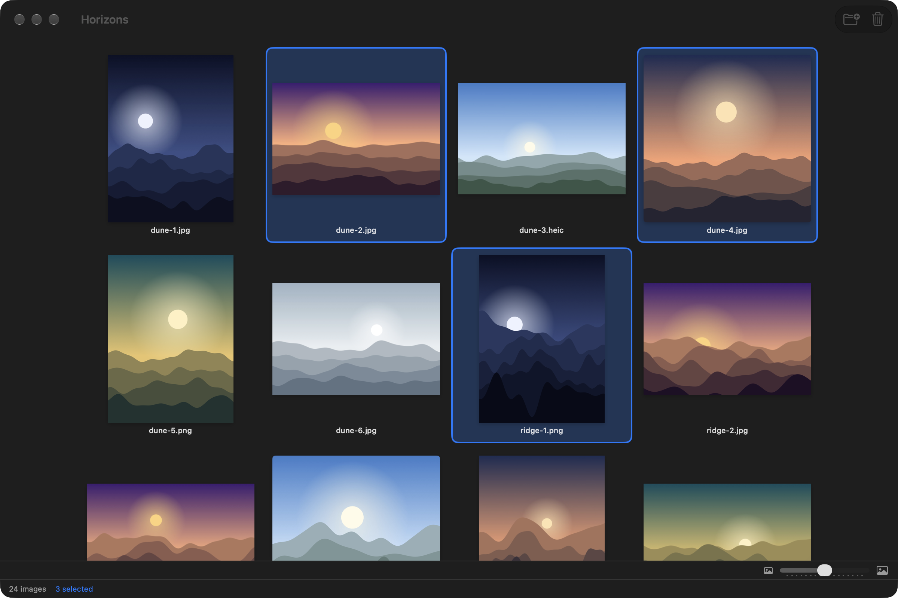
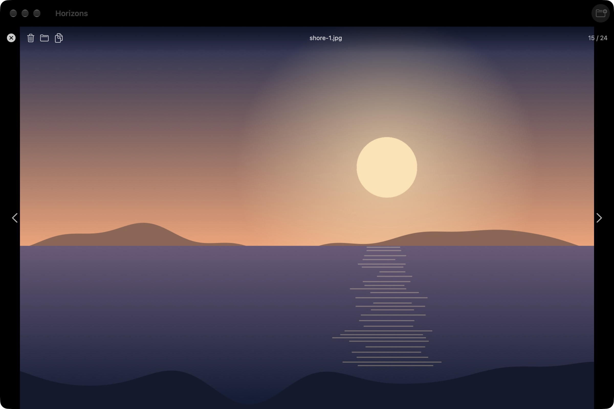

Pick, then act
⌘-click and ⇧-click to select, drag the slider for larger thumbnails. The toolbar sends the selection to the Trash; the context menu also shows it in Finder or copies its paths.
Open a folder and see every image in it and in its subfolders, as a contact sheet. Pick, compare, look closer, and send what you do not keep to the Trash.
Free and open source (MIT) · macOS 14 or later · signed and notarized · English and French

Every image in the folder and its subfolders, in one grid, sorted the way you read: shore-2 before shore-10.
JPG, PNG, GIF, BMP, TIFF, HEIC, HEIF, WebP, AVIF and SVG.
Thumbnails from 80 to 400 points, with a slider; Planche remembers the size you chose.
Space to look closer, ← → to move on, ⌘A to select all, ⌫ to trash. ⌘/ lists them all.
Planche never edits a file. The only destructive action goes through the macOS Trash.
It reads only the folders you open or drop on it. No account, no network, no dependencies.
⌘-click and ⇧-click to select, drag the slider for larger thumbnails. The toolbar sends the selection to the Trash; the context menu also shows it in Finder or copies its paths.

Double-click or press Space: the picture fills the window, with its path in the folder and its position. The arrows move through the whole set; Esc goes back to the grid where you left it.

Open the .dmg, drag Planche onto Applications. It is signed with a Developer ID and notarized by Apple: it opens with a double click.